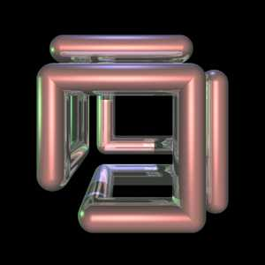
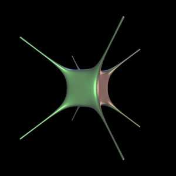
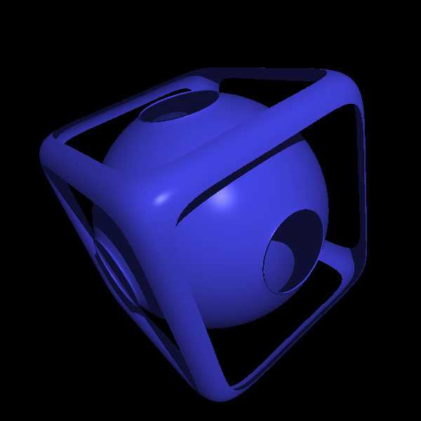
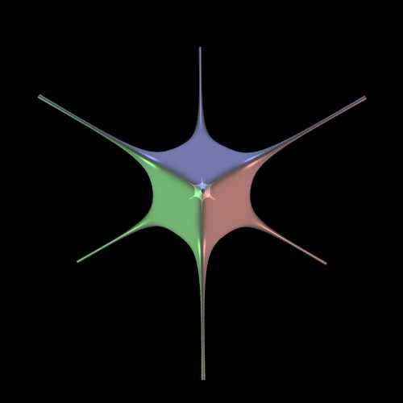

Personalities of the cube
By Paul Bourke
May 2004
|
Wiffle cube.
1 -
[ a2 (x2 + y2 + z 2) ]-6 -
[ b8 (x8 + y8 + z8) ]6 = 0
|

SGI logo.
|
|
Sculpture.
Canberra, Australia
|

Horned cube.
1 - 3 x8 - 3 y8 - 2*z8 +
5 x4 y2 z2
+ 3 x2 y4 z2 = 0
|
|
Imagined cube.
|
Perceptual fill-in.
|
|

Menger Sponge.
|
Hypercube.
|
Generating rounded cube geometry
Written by Paul Bourke
April 2012
The following will briefly describe a way of creating a rounded cube shape, example code
is supplied here: roundcube.c (Tab stops to 3 spaces for correct
indenting).
which created the shape and saves the result
as an obj file with normals and texture coordinates. The code should be easy to modify
to create the mesh geometry in other formats or for APIs such as OpenGL. The output from
the code plus a sample texture map are given below.
The roundedness of the cube is determined by the power the expressions in the polar
coordinate calculation of the sphere. A power of 1 is a perfect sphere, smaller powers
generate sharper and sharper cubes. The image below is a power of 0.5.
The normals are straightforward to calculate, they are just the vectors to the vertices
of the roundcube centered at the origin. There are many options
for the texture coordinates, the one chosen here is the projection of a sphere onto the
rounded cube. These are computed by calculating the longitude and latitude of each vertex of the
capsule and mapping those to (u,v) in the usual way.
Examples given the texture map (spherical projection) given above is shown below for power
of 0.2 and 0.1 respectively.
power = 0.2
power = 0.1
Note that this is a less general formulation of the superelipsoid.
Tooth Surface
Graphics by Paul Bourke
March 2003
|
x4 + y4 + z4 -
(x2 + y2 + z2) = 0
|
Wiffle cube
Paul Bourke
March 1990
Source code to create a volumetric dataset
The wiffle cube is basically a rounded (soft) cube with the
center sphere removed.
The field function in 3 dimensions at a point p = (x,y,z)
is given by the following where a is normally 1/2.3 and b = 1/2.
f(x,y,z) = 1 -
[ a2 (x2 + y2 + z 2) ]-6 -
[ b8 (x8 + y8 + z8) ]6
Isosurfaces of the above field function are wiffle cubes
as shown below as wire frame and simple rendered form.
The following are slices along one axis (the other axes would be the
same). The horizontal and vertical range is -2.5 to 2.5, the colour
is a linear colour ramp from -20 (blue) to about 0.88 (red).
Further rendered views varying the isosurface level.

The PovRay model that created the above:
wiffle.pov,
wiffle.ini.
Horned Cube
Contributed by Roger Bagula
Graphics by Paul Bourke
May 2003
|
-3 x8 - 3 y8 - 2*z8 +
5 x4 y2 z2
+ 3 x2 y4 z2 + 1 = 0
|

How to make the SGI logo
Written by Paul Bourke
November 1992
The SGI logo is generated as follows:
Given two lengths l1 and l2, the "turtle graphics" instructions
along with the resulting wire frame result are given below.
In what follows, left and right refer to moving towards the negative
numbers or positive numbers respectively. Up and down is movement along
the z axis, back and forward refer to the y axis.
forward l1
left l2
down l1
right l1
up l2
back l1
down l1
forward l2
left l1
back l1
right l2
up l1
left l1
down l2
forward l1
up l1
back l2
right l1
|
|
In the example above l1 = 1 and l2 = 0.7
Turning the line segments into
cylinder/sphere pairs is shown below
with its geometric description in Radiance
s cylinder cyl 0 0 7 -0.5 -0.5 0.5 0.5 -0.5 0.5 0.13
s cylinder cyl 0 0 7 0.5 -0.5 0.5 0.5 0.5 0.5 0.13
s cylinder cyl 0 0 7 -0.2 -0.8 -0.8 -0.2 0.2 -0.8 0.13
s cylinder cyl 0 0 7 -0.2 0.2 -0.8 0.8 0.2 -0.8 0.13
s cylinder cyl 0 0 7 0.8 0.2 -0.8 0.8 -0.5 -0.8 0.13
s cylinder cyl 0 0 7 0.8 -0.5 -0.8 0.8 -0.5 0.2 0.13
s cylinder cyl 0 0 7 0.8 -0.5 0.2 0.8 0.5 0.2 0.13
s cylinder cyl 0 0 7 0.8 0.5 0.2 0.8 0.5 -0.5 0.13
s cylinder cyl 0 0 7 0.8 0.5 -0.5 -0.2 0.5 -0.5 0.13
s cylinder cyl 0 0 7 -0.2 0.5 -0.5 -0.2 0.5 0.5 0.13
s cylinder cyl 0 0 7 0.5 0.5 0.5 -0.2 0.5 0.5 0.13
s cylinder cyl 0 0 7 -0.5 -0.5 0.5 -0.5 0.2 0.5 0.13
s cylinder cyl 0 0 7 -0.5 0.2 0.5 -0.5 0.2 -0.5 0.13
s cylinder cyl 0 0 7 -0.5 0.2 -0.5 -0.5 -0.8 -0.5 0.13
s cylinder cyl 0 0 7 -0.5 -0.8 -0.5 -0.5 -0.8 0.2 0.13
s cylinder cyl 0 0 7 -0.5 -0.8 0.2 0.5 -0.8 0.2 0.13
s cylinder cyl 0 0 7 0.5 -0.8 0.2 0.5 -0.8 -0.8 0.13
s cylinder cyl 0 0 7 0.5 -0.8 -0.8 -0.2 -0.8 -0.8 0.13
s sphere sph 0 0 4 -0.5 -0.5 0.5 0.13
s sphere sph 0 0 4 0.5 -0.5 0.5 0.13
s sphere sph 0 0 4 0.5 0.5 0.5 0.13
s sphere sph 0 0 4 -0.2 0.2 -0.8 0.13
s sphere sph 0 0 4 0.8 0.2 -0.8 0.13
s sphere sph 0 0 4 0.8 -0.5 -0.8 0.13
s sphere sph 0 0 4 0.8 -0.5 0.2 0.13
s sphere sph 0 0 4 0.8 0.5 0.2 0.13
s sphere sph 0 0 4 0.8 0.5 -0.5 0.13
s sphere sph 0 0 4 -0.2 0.5 -0.5 0.13
s sphere sph 0 0 4 -0.2 0.5 0.5 0.13
s sphere sph 0 0 4 -0.2 0.5 0.5 0.13
s sphere sph 0 0 4 -0.5 0.2 0.5 0.13
s sphere sph 0 0 4 -0.5 0.2 -0.5 0.13
s sphere sph 0 0 4 -0.5 -0.8 -0.5 0.13
s sphere sph 0 0 4 -0.5 -0.8 0.2 0.13
s sphere sph 0 0 4 0.5 -0.8 0.2 0.13
s sphere sph 0 0 4 0.5 -0.8 -0.8 0.13
s sphere sph 0 0 4 -0.2 -0.8 -0.8 0.13
|

|
The "logo" can be interlinked in each 3D
direction, a few cells are shown below
Tangle Surface
Graphics by Paul Bourke
March 2003
|
x4 - 5 x2 + y4 -
5 y2 + z4 - 5 z2 + 11.8 = 0
|
| 
{kind=link}
{kind=link}
{kind=link}
{kind=link}
{kind=link}
{kind=link}
{kind=link}
{kind=link}